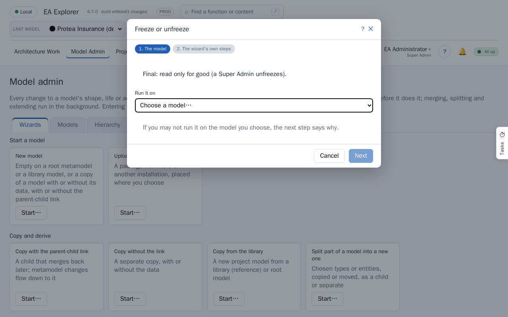

Freeze a model
For: Model Admin
Make a model read only for good; it can still be copied, compared and reported on.

#/model-admin/wizards?wizard=freezeWhy do this
Some models must stay exactly as they were: an approved baseline, a record submitted to a regulator, the state at an acquisition. Freezing makes the model read only for good, while it can still be copied, compared and reported on.
A model's life has stages: started, worked on, copied or split, handed over, locked or frozen at key moments, archived when done. Each stage has its wizard, and each asks before it changes anything.
In TOGAF terms: The Architecture Landscape in the Architecture Repository: the models at strategic, segment, capability and transition levels. See EA Explorer and the TOGAF Standard.
The goal: A model can never change again, and everyone can trust that.
Before you start You need the Model Admin role on the model. Only a Super Admin can unfreeze it.
Steps
- Open Model Admin › Wizards on the model and choose Freeze.
- Read what it means and confirm.